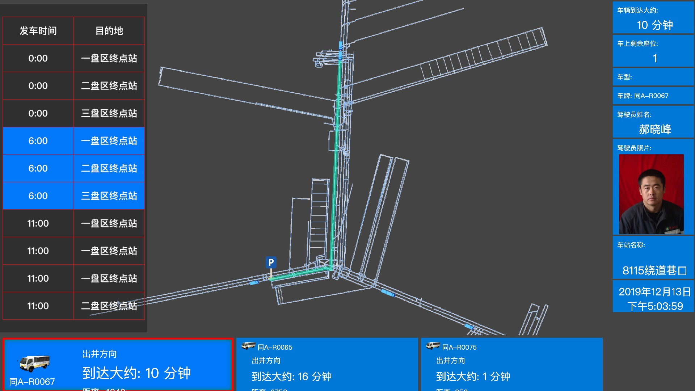
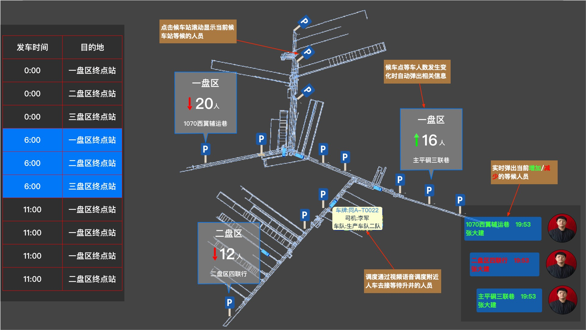

20191214李队沟通
- 临时用车几乎不存在计划情况
- 车队不适合自动排班调度
- 升降车先改逻辑
- 统计车队各类型数量（90%资源）
- 车辆资源化类型
一个单位每天智能申请一辆：
升降车
一个单位每天智能申请多辆：平板车料车
固定部门用车：’炸药车’
不能申请的类型：洒水车水泥罐车装载机
按时间段申请订单
大早班：
8:00-20:00
早班：8:00-15：00
中班：15:00-21：00
晚班：21:00-7：00资源化条件
根据使用趟数限制申请数量
向晚班分配资源
根据矿里规定合理分配不通单位的申请使用时间
自动审批用车申请
调度账户
调度可以只驳回订单
凌晨12点自动通过审批车队账户
特种车辆-威龙
项目部-威龙
人车-威龙
矿本部-塔通
特殊项目部-塔通威龙提交排班
每天8点如果没有提交排班则自动提交
增加对车队的考核
- 车队派车分为早中晚三班
- 用车申请控制可以申请的数量
- 全车队每班有
112名司机 - 车队车辆数大于司机数
- 统计不同车辆占用司机数量
| 车辆类型 | 数量 | 最大出入井次数 |
|---|---|---|
| 10吨多功能车 | ||
| 3吨料车 | ||
| 3吨料车(小) | ||
| 5吨平板 | ||
| 5吨加长平板 | ||
| 5吨翻斗 | ||
| 10吨平板 | ||
| 12座人车 | ||
| 20座人车 | ||
| ED55吨铲车 | ||
| 支架回撤车 | ||
| 水泥罐车 | ||
| 拉管车 | ||
| 20座接待人车 | ||
| 洒水车 | ||
| 升降车 | ||
| 炸药车 | ||
| 煤泥车 | ||
| 50吨支架车 | ||
| 5吨叉车 | ||
| 10吨叉车 | ||
| 55吨支架车 | ||
| 40吨铲车 | ||
| 25吨铲车 | ||
| 20装载机 | ||
| 30装载机 | ||
| 指挥车 |
2019年12月09日
| 车辆类型 | 出井次数 |
|---|---|
| 5吨加长平板 | 2 |
| 3吨料车 | 99 |
| 3吨料车(小) | 2 |
| 5吨平板 | 25 |
| 5吨翻斗 | 6 |
| 料车 | 44 |
定点人车
路径固定
不能拐弯接人
时间固定
数量固定
人员不固定固定
经过候车站固定，由车队每日固定排班常规人车 （人数少 先不做）
时间基本固定
数量基本固定
线路固定
有特殊用途
人员固定
计算预计经过的候车站临时人车
时间不固定、
数量不固定
线路不固定固定
可以拐弯接人
有特殊用途
人员不固定固定
自由匹配候车站料车（规定不允许）
时间不固定、
数量不固定
线路不固定固定
可以拐弯接人
有特殊用途
人员不固定固定
自由匹配候车站
井下电脑端

调度端

定点人车共：24辆/天
| 发车时间 | 目的地 |
|---|---|
| 0:00 | 一盘区终点站 |
| 0:00 | 二盘区终点站 |
| 0:00 | 三盘区终点站 |
| 6:00 | 一盘区终点站 |
| 6:00 | 二盘区终点站 |
| 6:00 | 三盘区终点站 |
| 11:00 | 一盘区终点站 |
| 11:00 | 一盘区终点站 |
| 11:00 | 一盘区终点站 |
| 11:00 | 二盘区终点站 |
| 11:00 | 二盘区终点站 |
| 11:00 | 三盘区终点站 |
| 12:00 | 一盘区终点站 |
| 12:00 | 二盘区终点站 |
| 12:00 | 三盘区终点站 |
| 18:00 | 一盘区终点站 |
| 18:00 | 一盘区终点站 |
| 18:00 | 二盘区终点站 |
| 18:00 | 二盘区终点站 |
| 18:00 | 三盘区终点站 |
| 18:00 | 三盘区终点站 |
| 19:00 | 一盘区终点站 |
| 19:00 | 二盘区终点站 |
| 19:00 | 三盘区终点站 |
候车站显示的内容
- 二代车载定位可以收集车上的人数
- 井下基站可以配置后获取人员数量
| 发车时间 | 目的地 | 用车部门 | 发车数量 |
|---|---|---|---|
| 6:00 | 一盘区终点站 | 其他 | 1辆 |
| 6:00 | 二盘区终点站 | 其他 | 1辆 |
| 6:00 | 三盘区终点站 | 其他 | 1辆 |
| 7:20 | 掘进巷道 | 掘进5区 | 4辆 |
| 7:30 | 一盘区终点站 | 其他 | 1辆 |
| 7:30 | 二盘区终点站 | 其他 | 1辆 |
| 7:30 | 三盘区终点站 | 其他 | 1辆 |
| 7:30 | 三盘区终点站 | 其他 | 1辆 |
6点钟的定点人车发车准确6点-6点半相对有规律多几辆车11点派车数量少于计划数量、18点相对有规律多几辆车
| 日期 | 班次总数 | 临时班次总数 | 临时班次比例 |
|---|---|---|---|
| 2019年12月11日 | 177辆 | 26辆 | 14.7% |
| 2019年12月10日 | 173辆 | 26辆 | 16.2% |
| 2019年12月09日 | 168辆 | 19辆 | 11.3% |
| 2019年12月08日 | 177辆 | 26辆 | 12.0% |
2019年12月11日
- 发车总数
177班次
| 固定时刻表 | 计划车辆 | 定点确定车辆 | 定点不确定车辆 | 临时派车 |
|---|---|---|---|---|
| 6:00 | 3辆 | 3辆 | 0辆 | 4辆 |
| 7:20 - 9:00 | （24+N）辆 | 24辆 | 28辆 | 0辆 |
| 11:00 | 9辆 | 7辆 | 0辆 | 0辆 |
| 12:00 | 3辆 | 3辆 | 0辆 | 0辆 |
| 15:00 - 15:30 | (3+N)辆 | 3辆 | 21辆 | 0辆 |
| 18:00 | 6辆 | 6辆 | 0辆 | 3辆 |
| 19:00 - 21:00 | （24+N）辆 | 24辆 | 26辆 | 0辆 |
| 临时时刻表 | 临时派车 |
|---|---|
| 6:30 - 7:00 | 0辆 |
| 9:30 - 10:30 | 7辆 |
| 12:30 | 2辆 |
| 13:00 - 14:00 | 3辆 |
| 14:30 - 15:00 | 11辆 |
| 16:00 - 18:00 | 2辆 |
| 22:30 - 24:00 | 1辆 |
| 总计 | 26辆 |
2019年12月10日
- 发车总数
173班次
| 固定时刻表 | 计划车辆 | 定点确定车辆 | 定点不确定车辆 | 临时派车 |
|---|---|---|---|---|
| 6:00 | 3辆 | 3辆 | 0辆 | 0辆 |
| 7:20 - 9:00 | （24+N）辆 | 24辆 | 26辆 | 0辆 |
| 11:00 | 9辆 | 5辆 | 0辆 | 0辆 |
| 12:00 | 3辆 | 3辆 | 0辆 | 0辆 |
| 15:00 - 15:30 | (3+N)辆 | 3辆 | 17辆 | 0辆 |
| 18:00 | 6辆 | 6辆 | 0辆 | 3辆 |
| 19:00 - 21:00 | （24+N）辆 | 24辆 | 24辆 | 0辆 |
| 临时时刻表 | 临时派车 |
|---|---|
| 6:30 - 7:00 | 2辆 |
| 9:30 - 10:30 | 6辆 |
| 12:30 | 2辆 |
| 13:00 - 14:00 | 4辆 |
| 14:30 - 15:00 | 9辆 |
| 16:00 - 18:00 | 1辆 |
| 22:30 - 24:00 | 2辆 |
| 总计 | 28辆 |
2019年12月09日
- 发车总数
168班次
| 固定时刻表 | 计划车辆 | 定点确定车辆 | 定点不确定车辆 | 临时派车 |
|---|---|---|---|---|
| 6:00 | 3辆 | 3辆 | 0辆 | 0辆 |
| 7:20 - 9:00 | （24+N）辆 | 24辆 | 29辆 | 0辆 |
| 11:00 | 9辆 | 6辆 | 0辆 | 0辆 |
| 12:00 | 3辆 | 3辆 | 0辆 | 1辆 |
| 15:00 - 15:30 | (3+N)辆 | 3辆 | 17辆 | 0辆 |
| 18:00 | 6辆 | 6辆 | 0辆 | 2辆 |
| 19:00 - 21:00 | （24+N）辆 | 24辆 | 20辆 | 0辆 |
| 临时时刻表 | 临时派车 |
|---|---|
| 6:30 - 7:00 | 3辆 |
| 9:30 - 10:30 | 1辆 |
| 12:30 | 2辆 |
| 13:00 - 14:00 | 3辆 |
| 14:30 - 15:00 | 5辆 |
| 16:00 - 18:00 | 4辆 |
| 22:30 - 24:00 | 0辆 |
| 总计 | 19辆 |
2019年12月08日
- 发车总数
158班次
| 固定时刻表 | 计划车辆 | 定点确定车辆 | 定点不确定车辆 | 临时派车 |
|---|---|---|---|---|
| 6:00 | 3辆 | 3辆 | 0辆 | 0辆 |
| 7:20 - 9:00 | （24+N）辆 | 24辆 | 20辆 | 0辆 |
| 11:00 | 9辆 | 7辆 | 0辆 | 0辆 |
| 12:00 | 3辆 | 3辆 | 0辆 | 1辆 |
| 15:00 - 15:30 | (3+N)辆 | 3辆 | 19辆 | 0辆 |
| 18:00 | 6辆 | 6辆 | 0辆 | 0辆 |
| 19:00 - 21:00 | （24+N）辆 | 24辆 | 20辆 | 0辆 |
| 临时时刻表 | 临时派车 |
|---|---|
| 6:30 - 7:00 | 0辆 |
| 9:30 - 10:30 | 2辆 |
| 12:30 | 2辆 |
| 13:00 - 14:00 | 5辆 |
| 14:30 - 15:00 | 6辆 |
| 16:00 - 18:00 | 4辆 |
| 22:30 - 24:00 | 0辆 |
| 总计 | 19辆 |
8:00-12:0014:00-17:30出井车辆相对集中- 每辆每天车入井4-6趟
- 料车不允许带人
- 人车主要是定点发车
- 特殊情况人车，例如：
准备队 - 候车站需要和辅运部确认一下候车站情况
- 人车行驶路径基本是直线
| 日期 | 12月2日 | 12月3日 | 12月4日 | 12月5日 | 12月6日 | 12月7日 | 12月8日 |
|---|---|---|---|---|---|---|---|
| 0点-1点 | 2 | 2 | 3 | 2 | 1 | 3 | 1 |
| 1点-2点 | 3 | 2 | 4 | 3 | 3 | 3 | 3 |
| 2点-3点 | 0 | 1 | 0 | 0 | 0 | 0 | 0 |
| 3点-4点 | 0 | 0 | 1 | 0 | 0 | 1 | 0 |
| 4点-5点 | 0 | 1 | 0 | 2 | 0 | 0 | 0 |
| 5点-6点 | 0 | 1 | 1 | 0 | 3 | 0 | 0 |
| 6点-7点 | 2 | 1 | 4 | 5 | 7 | 4 | 5 |
| 7点-8点 | 9 | 7 | 3 | 6 | 4 | 6 | 7 |
| 8点-9点 | 12 | 8 | 10 | 10 | 9 | 10 | 9 |
| 9点-10点 | 17 | 22 | 23 | 21 | 19 | 21 | 20 |
| 10点-11点 | 14 | 14 | 12 | 16 | 17 | 14 | 12 |
| 11点-12点 | 4 | 7 | 9 | 0 | 8 | 1 | 1 |
| 12点-13点 | 6 | 9 | 7 | 9 | 13 | 7 | 7 |
| 13点-14点 | 4 | 7 | 3 | 5 | 5 | 5 | 6 |
| 14点-15点 | 4 | 1 | 3 | 7 | 8 | 3 | 2 |
| 15点-16点 | 6 | 5 | 3 | 5 | 3 | 7 | 10 |
| 16点-17点 | 15 | 14 | 14 | 15 | 13 | 10 | 12 |
| 17点-18点 | 7 | 9 | 6 | 6 | 8 | 10 | 12 |
| 18点-19点 | 3 | 3 | 1 | 4 | 5 | 1 | 3 |
| 19点-20点 | 6 | 9 | 10 | 6 | 12 | 6 | 6 |
| 20点-21点 | 4 | 13 | 11 | 9 | 12 | 12 | 13 |
| 21点-22点 | 0 | 21 | 21 | 14 | 23 | 22 | 22 |
| 22点-23点 | 0 | 13 | 11 | 14 | 11 | 13 | 9 |
| 23点-24点 | 0 | 3 | 5 | 4 | 1 | 1 | 1 |
| 总计 | 161 | 172 | 165 | 165 | 183 | 160 | 158 |
12月9日 人车记录
| 时间段 | 人车数量 | 乘车人数 | 已乘数量 |
|---|---|---|---|
| 0点-1点 | 3 | 60 | - |
| 1点-2点 | 3 | 60 | - |
| 2点-3点 | 0 | 0 | - |
| 3点-4点 | 1 | 20 | - |
| 4点-5点 | 0 | 0 | - |
| 5点-6点 | 1 | 20 | - |
| 6点-7点 | 4 | 72 | - |
| 7点-8点 | 6 | 104 | - |
| 8点-9点 | 8 | 144 | - |
| 9点-10点 | 29 | 484 | - |
| 10点-11点 | 8 | 144 | - |
| 11点-12点 | 4 | 56 | 36 |
| 12点-13点 | 12 | 196 | 75 |
| 13点-14点 | 5 | 100 | 29 |
| 14点-15点 | 2 | 40 | 2 |
| 15点-16点 | 5 | 84 | 27 |
| 16点-17点 | 16 | 272 | 89 |
| 17点-18点 | - | - | - |
| 18点-19点 | - | - | - |
| 19点-20点 | - | - | - |
| 20点-21点 | - | - | - |
| 21点-22点 | - | - | - |
| 22点-23点 | - | - | - |
| 23点-24点 | - | - | - |
12月10日 人车记录
| 时间段 | 人车数量 | 乘车人数 | 已乘数量 |
|---|---|---|---|
| 0点-1点 | 1 | 12 | - |
| 1点-2点 | 2 | 40 | - |
| 2点-3点 | 0 | 0 | - |
| 3点-4点 | 1 | 12 | - |
| 4点-5点 | 0 | 0 | - |
| 5点-6点 | 0 | 20 | - |
| 6点-7点 | 5 | 84 | - |
| 7点-8点 | 5 | 100 | - |
| 8点-9点 | 9 | 172 | 46 |
| 9点-10点 | 31 | 460 | 177 |
| 10点-11点 | 8 | 152 | 0 |
| 11点-12点 | 6 | 104 | 14 |
| 12点-13点 | 5 | 100 | 0 |
| 13点-14点 | 5 | 100 | 0 |
| 14点-15点 | 6 | 104 | 35 |
| 15点-16点 | 7 | 124 | 61 |
| 16点-17点 | 14 | 256 | 182 |
| 17点-18点 | 8 | 144 | - |
| 18点-19点 | - | - | - |
| 19点-20点 | - | - | - |
| 20点-21点 | - | - | - |
| 21点-22点 | - | - | - |
| 22点-23点 | - | - | - |
| 23点-24点 | - | - | - |